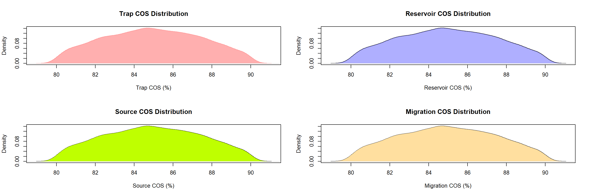
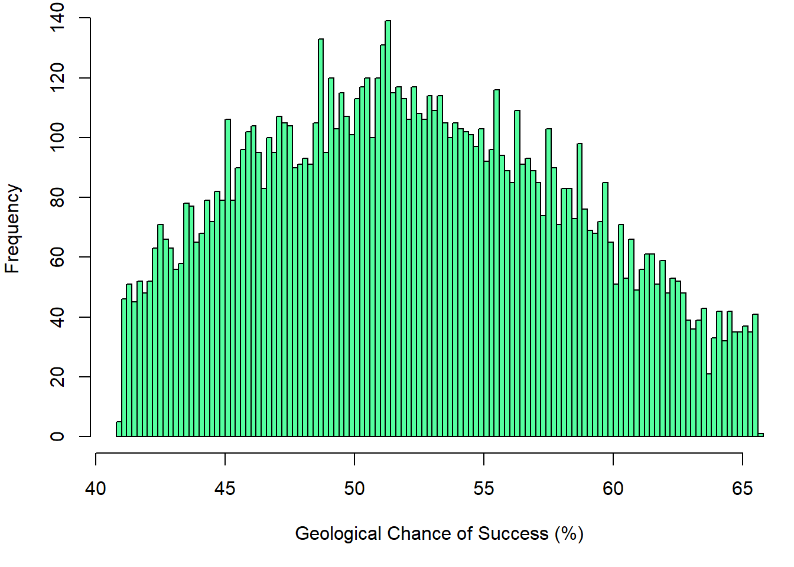
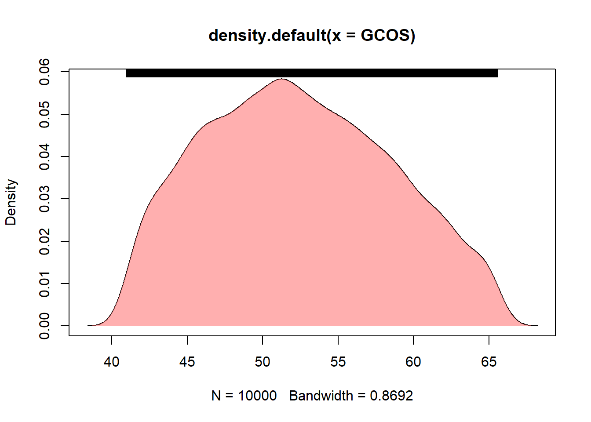
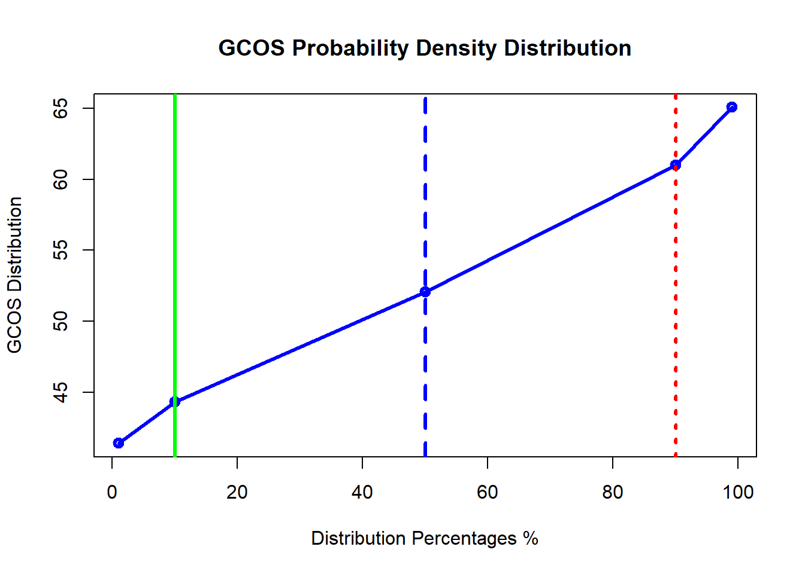

library(mc2d)
### Inputs
Tp90 <- 80 ### % ### Trap MINIMUM VALUE
Tp10 <- 90 ### % ### Trap THROW MAXIMUM VALUE
Rp90 <- 80 ### % ### Reservoir MINIMUM VALUE
Rp10 <- 90 ### % ### Reservoir MAXIMUM VALUE
Sp90 <- 80 ### % ### Source MINIMUM VALUE
Sp10 <- 90 ### % ### Source MAXIMUM VALUE
Mp90 <- 80 ### % ### Migration MINIMUM VALUE
Mp10 <- 90 ### % ### Migration MAXIMUM VALUE n = 10000 ### NUMBER OF ITERATIONS
seed = 999 ### SEED
### Calculate the SD
Tsd <- sd(Tp90:Tp10)
Rsd <- sd(Rp90:Rp10)
Ssd <- sd(Sp90:Sp10)
Msd <- sd(Mp90:Mp10)
### Calculate the Mean
Tmean <- mean(Tp90:Tp10)
Rmean <- mean(Rp90:Rp10)
Smean <- mean(Sp90:Sp10)
Mmean <- mean(Mp90:Mp10)
### Trap Distribution
TR = mcstoc(rnorm, mean=Tmean, sd=Tsd, rtrunc=TRUE, linf=Tp90, lsup=Tp10, seed = seed, nsv= n )
### Distribution
Rs = mcstoc(rnorm, mean=Rmean, sd=Rsd, rtrunc=TRUE, linf=Rp90, lsup=Rp10, seed = seed, nsv= n )
### Source Distribution
Sr = mcstoc(rnorm, mean=Smean, sd=Ssd, rtrunc=TRUE, linf=Sp90, lsup=Sp10, seed = seed, nsv= n)
### Source Distribution
Mg = mcstoc(rnorm, mean=Mmean, sd=Msd, rtrunc=TRUE, linf=Mp90, lsup=Mp10, seed = seed, nsv= n)
par(mfrow=c(2,2))
#
# hist(T, xlab="Fault throw (m)", breaks=100, col="cyan", border = NA)
# hist(L, xlab="Layer Thickness (m)", breaks=100, col="red", border = NA)
# hist(S, xlab="S (%)", breaks=100, col="yellow", border = NA)
DENT <- density(TR)
DENR <- density(Rs)
DENS <- density(Sr)
DENM <- density(Mg)
plot(DENT, col="#ff606080", border=NA,xlab="Trap COS (%)",main = "Trap COS Distribution")
polygon(DENT, col="#ff606080", border=NA)
plot(DENR, xlab="Reservoir COS (%)",main = "Reservoir COS Distribution")
polygon(DENR, col="#6060ff80", border=NA)
plot(DENS, xlab="Source COS (%)",main = "Source COS Distribution")
polygon(DENS, col="#bfff00", border=NA)
plot(DENM, xlab="Migration COS (%)",main = "Migration COS Distribution")
polygon(DENS, col="#FFDF9F", border=NA)
GCOS = (TR/100 * Rs/100 *Sr/100 * Mg/100)*100
### Historgam plot for GCOS
hist(GCOS, xlab="Geological Chance of Success (%)", breaks=100, col="seagreen1")
### density plot for GCOS
DENGCOS <- density(GCOS)
plot(DENGCOS)
polygon(DENGCOS, col="#ff606080", border=NA)
rug(GCOS, side = 3)
#abline(v=c(18,22),lwd = 3,col = c("green","red") , lty =c(1,3))
P<-summary(GCOS, probs = c(0.01,0.1,0.50,0.9,0.99))
Pdata<- data.frame(unmc(P))
colnames(Pdata)<- c("Mean","SD","1%","10%","50%","90%","99%")
rownames(Pdata)[1] <- "GCOS"
knitr::kable(Pdata[1:7], digits = 0, caption = "GCOS MC Distribution ",booktabs = TRUE)| Mean | SD | 1% | 10% | 50% | 90% | 99% | |
|---|---|---|---|---|---|---|---|
| GCOS | 52 | 6 | 41 | 44 | 52 | 61 | 65 |
plot(x=c(1,10,50,90,99), y=Pdata[3:7], type="o",lwd = 3,
col="blue", main = "GCOS Probability Density Distribution",
xlab = "Distribution Percentages %",
ylab = "GCOS Distribution")
abline(v=c(10,50,90),lwd = 3,col = c("green","blue","red") , lty =c(1,2,3)) ############################################ Shinyapp has been created to calculate the risking analysis parameters without the hassel of changing the code. You can just play with the essential parameters and you get all the results instantaneously.
Please dont hesitate to contact me over a_moslim@live.com to share your comments.